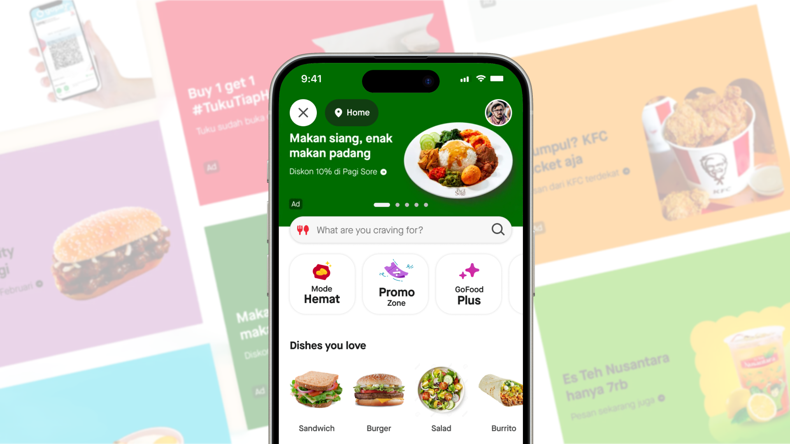
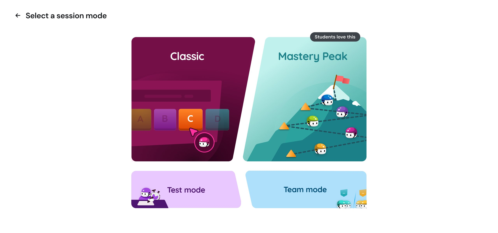

Design decisions should be
proven, not debated.
So I prototype in code, run experiments, and let the data settle the argument.
 60%
Self-serve banner CTR on GoFood. A multivariate experiment, then scaled to all merchants.
60%
Self-serve banner CTR on GoFood. A multivariate experiment, then scaled to all merchants.

2× → 4.5× Merchant ROAS on masthead. We wrote our way into GoFood's redesign and built the premium format.
Shipped, watched it regress,shipped again. Do we ever need modes? Wayground's most-trafficked surface, rebuilt twice.
Writing
The ratings we didn't show An experiment said hide bad restaurant ratings to lift clicks. The click-optimal move was the wrong one. All writingConnect
Say hello at attnchand@gmail.com, or find me around the web.